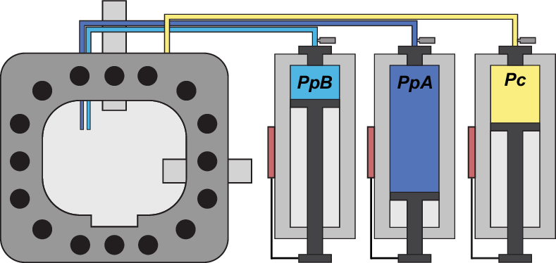
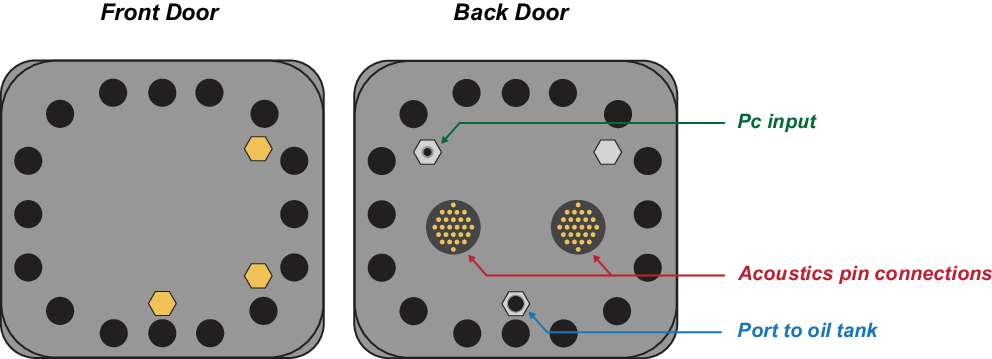

Pressure Vessel Setup Workflow – Draft
Inserting Vessel into Biax:
-
Move
both
pistons
to
minimum
position.
-
Disconnect
and
remove
DCDTs,
load
cells,
and
limit
switches.
-
Maneuver
Vessel
cart
in
front
of
biax.
-
Rotate
Vessel
such
that
the
bottom/top
face
horizontal
piston,
then
carefully
slide
it
into
Biax.
-
Flip
Vessel
upright.
2
persons
required
to
act
as
fulcrum
and
lever.
Use
caution.
-
Insert
metal
spacer
blocks
(×
4)
and
shims
(×
3)
and
align
Vessel.
-
Reconnect
and
install
all
DCDTs,
load
cells,
and
limit
switches,
except
for
vertical
DCDT.
Preparing Vessel for Confining Fluid:
-
Inspect
all
fluid
port
connections
(top
&
internal)
for
damage
(threading)
–
replace
if
necessary.
-
Insert
horizontal
and
vertical
piston
extensions
(pucks)
through
respective
orifices
using
nose
cone.
-
Insert
appropriate
corner
and
spacing
blocks
for
respective
SDS
or
DDS
configuration.
-
Put
in
sample,
align,
and
connect
to
internal
fluid
ports.
Everything
must
be
properly
aligned
to
prevent
stress
concentrations.
Some
setups
include
an
internal
DCDT
or
other
additional
measurement
devices.
-
Remove
old
excess
vacuum
grease
and
oil
from
both
door
O-rings
and
inspect
for
damage
–
replace
if
necessary.
-
Thoroughly
clean
o-ring
indents
on
Vessel.
Uniformly
coat
o-rings
with
vacuum
grease
(surface
should
feel
tacky)
and
install.
- Securing Vessel Doors:
-
Apply
a
small
horizontal
stress
(≈ 1
MPa)
on
sample
to
prevent
rotation
of
Vesssel.
-
Carry
back
door
(Pc
and
ultrasonic
connections)
to
back
of
Biax
and
rest
between
base
and
horizontal
load
frame.
DDS
configuration:
connect
ultrasonic
cables
now.
Lift
door
into
place
and
gently
align
into
opening.
Use
caution.
When
properly
aligned,
the
door
can
be
gently
pushed
into
Vessel.
-
Process
is
similar
for
front
door,
except
for
ultrasonic
connections.
Use
caution.
-
Put
bolts
(w/
washer)
in
all
door
holes
and
tighten
with
pneumatic
screw
driver.
-
Use
large
wrench
to
completely
tighten
all
bolts
in
2
rounds.
Do
not
tighten
in
a
circular
pattern,
see
Figure
3
for
suggested
tightening
scheme.
The
wrench
should
make
a
clicking
sound
(indicating
tightness)
for
all
bolts
in
second
round.
- Connect and tighten Pc line and tube from oil tank into back door.
- Insert and connect vertical DCDT.
- Connect ultrasonic cables from back of vessel to Verasonics.
Saturating sample:
-
Increase
stresses
in
this
order:
σn
and
then
Pc.
Rule
of
thumb:
σn - Pc ≈ 1
MPa.
-
Connect
inlet
fluid
line
from
intensifier
to
top
of
Vessel
and
then
pressurize.
Always
make
sure
σn > Pc > Pp
.
Note:
The
stresses,
pressures
should
be
optimized
to
decrease
saturation
time,
but
not
damage/perturb
porous
media.
-
Samples
with
very
low
permeability
may
require
a
vacuum
pump
to
be
connect
to
downstream
port
at
top
of
vessel,
to
assist
with
saturation.
-
After
pushing
through
the
volume
of
the
intensifier
(×2),
then
check
if
sample
has
been
saturated.
-
While
there
is
Ppinlet,
plug/close
valve
at
downstream
and
monitor
the
inlet
intensifier
displacement
rate.
If
it
reaches
a
steady-state
≈ 0,
and
the
Pc
is
also
≈ 0,
then
it
unlikely
for
water
to
be
infiltrating
the
porous
media.
-
If
Ppinlet > 0,
then
the
sample
may
not
be
saturated.
-
If
Pc ≫ 0
&
no
oil
is
leaking
from
Vessel
exterior,
then
there
may
be
oil
infiltration
into
the
sample.

Figure 1: Pressure vessel and pressure intensifiers, PpA, PpB, and Pc. The
back door has ports to fill from the confining oil reservoir and to pressurize
from the Pc intensifier, and has the availability for connecting to internal
acoustics.

Figure 2: Vessel door schematic. The back door has ports to fill from the
confining oil reservoir and to pressurize from the Pc intensifier, and has the
availability for connecting to internal acoustics.

Figure 3: Suggested order for tightening bolts on vessel doors. Proceed in
alphabetical order, opposite pairs, to avoid a circular pattern.